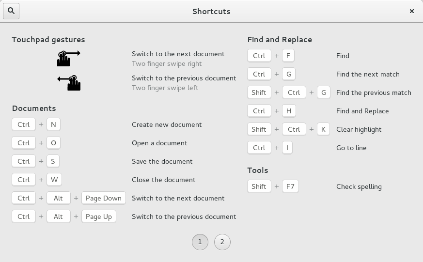
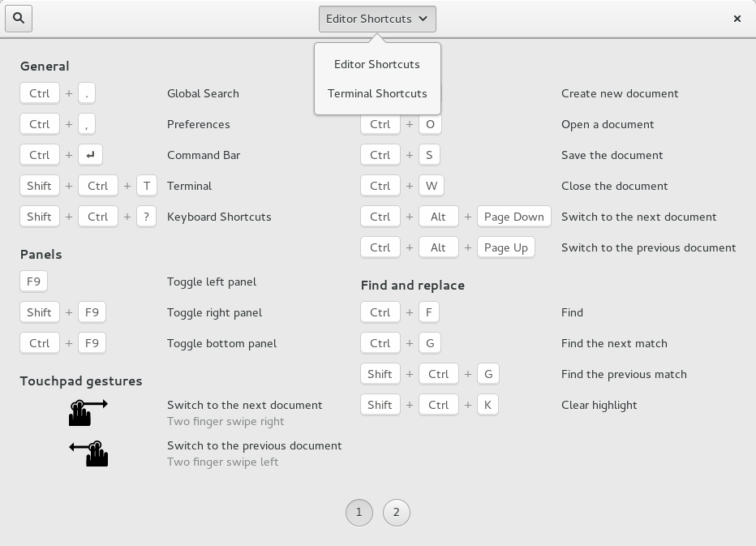

GtkShortcutsWindow
A GtkShortcutsWindow shows brief information about the keyboard shortcuts and gestures of an application. The shortcuts can be grouped, and you can have multiple sections in this window, corresponding to the major modes of your application.
Additionally, the shortcuts can be filtered by the current view, to avoid showing information that is not relevant in the current application context.
The recommended way to construct a GtkShortcutsWindow is with GtkBuilder, by populating a GtkShortcutsWindow with one or more GtkShortcutsSection objects, which contain GtkShortcutsGroup that in turn contain objects of class GtkShortcutsShortcut.
A simple example:

This example has as single section. As you can see, the shortcut groups are arranged in columns, and spread across several pages if there are too many to find on a single page.
The .ui file for this example can be found here.
An example with multiple views:

This example shows a GtkShortcutsWindow that has been configured to show only the shortcuts relevant to the "stopwatch" view.
The .ui file for this example can be found here.
An example with multiple sections:

This example shows a GtkShortcutsWindow with two sections, "Editor Shortcuts" and "Terminal Shortcuts".
The .ui file for this example can be found here.
GtkShortcutsWindow
GObject ╰──GInitiallyUnowned ╰──GtkWidget ╰──GtkContainer ╰──GtkBin ╰──GtkWindow ╰──GtkShortcutsWindow
The results of the search are